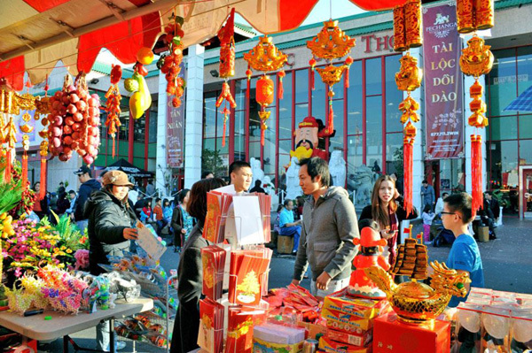
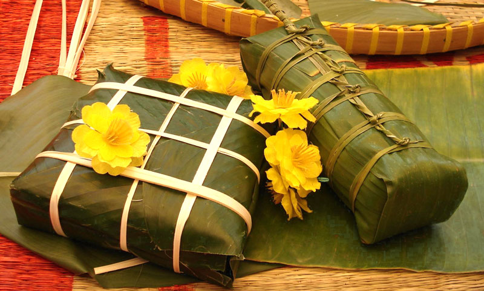
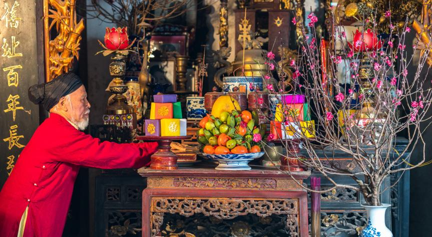
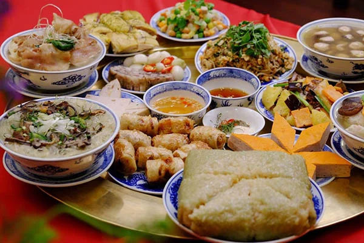
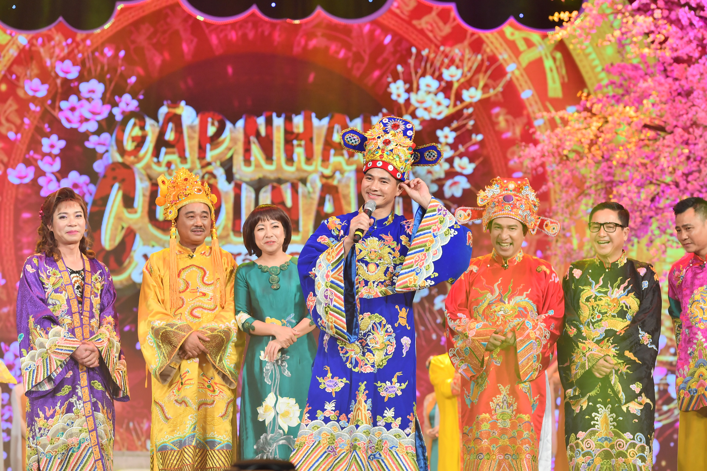
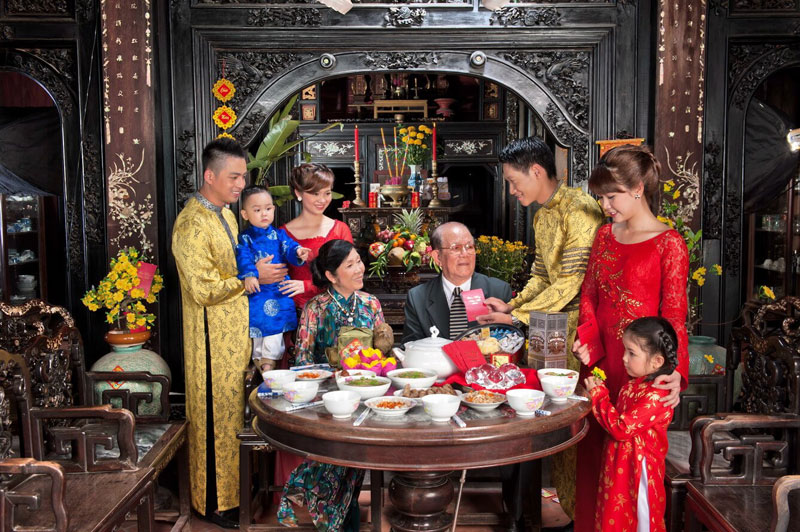
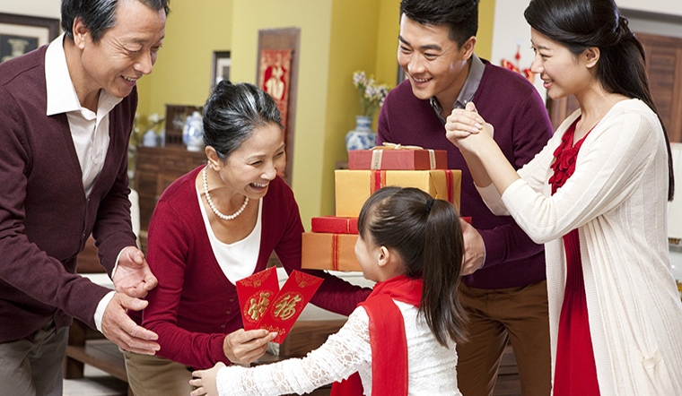
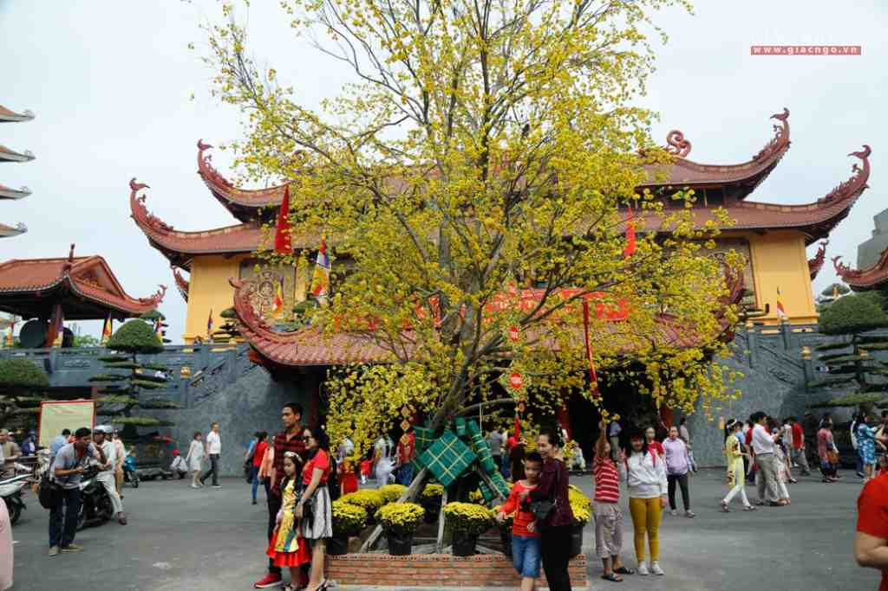
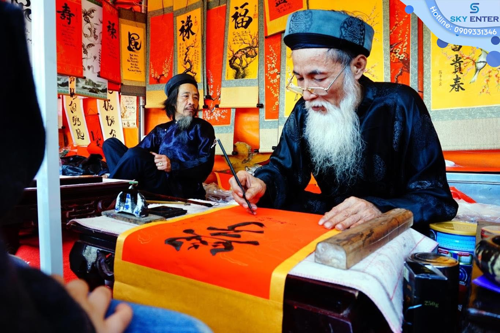
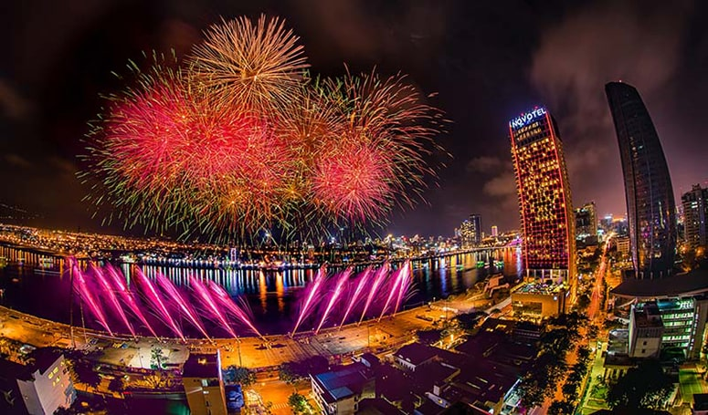

Tet Holiday, or Vietnamese Lunar New Year, is the most important festival in Vietnam. Tet is the time for a family reunion, so people visit their family, prepare, and enjoy the Tet holiday together.

1. Buying decorations
Lunar New Year is an occasion for members to prepare new items and furniture
to welcome a full Tet and a fortunate year. It’s also essential to buy flowers to decorate at home.
In the north of Vietnam, Northern Vietnamese usually buy Peach Blossom trees, while people place Ochna trees in their houses in the South.
“The more beautiful the Ochna tree is, the luckier the family receives on New Year,” – My mom said.

2. Making traditional Vietnamese cake
Tet is the time for tradition. Folding Traditional cake – Banh Chung, Banh Tet
is a Vietnamese tradition that started from the 18th Hung Vuong King. On the
28th – 29th of the Tet Holiday, Vietnamese families often gather and make Banh Chung
(square glutinous rice cake) and Banh Tet to enjoy and give to others.

3. Worshiping the ancestors
Preparing dishes to worship the ancestors has become a significant activity on the 30th of Tet Holiday.
This beautiful tradition reminds people about their ancestors’ memories and their merits. In the early morning,
the family members prepare the altar and dishes to “invite” their ancestors to come back and celebrate Tet
together. By doing this, Vietnamese people can show respect to their ancestors. Tet banquet becomes the invisible
link between the living and the dead.

4. Tasting Vietnamese traditional food
Tet is the best time to try traditional Vietnamese food. Banh Chung, Banh Tet, and pig
trotters stewed with dried bamboo shoots are the main dishes. Pickled onion, small pickled leeks,
roasted watermelon seeds, and dried candied fruits are essential side dishes to try in every house.

5. Watching Tet’s TV series
Some special TV series are only available on Tet Holiday, and families usually sit
together and enjoy them. One of the most popular series is Tao Quan – The Kitchen Gods, a yearly
comedy series. It reports the main issues in Vietnam in that fiscal year with a good sense of humor.

6. Family reunion
Tet is the time for family. Despite how far they live, Vietnamese people always try their
best to return home for a family reunion. Family members usually gather together at the main house, or
they will go around and visit their relatives and friends. People often organize the Tet banquet during
these reunions, and of course, there will be a lot of drinking and eating.

7. Receiving lucky money
Lucky money is, as its name, a gift from one person to another to wish them a Happy
New Year. Lucky money is often placed in a red envelope, as red equals “lucky” in
Vietnamese culture. Usually, kids receive lots of lucky money, and they will need
to wish the giver best wishes.

8. Visiting pagodas and temples
Vietnamese usually visit pagodas on the Tet holiday with the desire to find peace,
dismiss the anxieties and worries of the old year, and wish for luck and happiness
in the new year. Visiting a pagoda is not only to make a wish, but it is also a
moment in which one is immersed in spirituality. People try to visit Pagoda after
New Year’s Eve or the first days of Lunar New Year.

9. Receiving Parallel and Calligraphy pictures
Vietnamese people have traditions to receive parallel and Calligraphy photos from the
Master (ông Đồ) on Tet Holiday. When Vietnamese people go to the Tet market, they
usually go through the market gate and ask for the Master, who gives a parallel
sentence or a single word.

10. New Year Eve’s ceremony
New Year’s Eve is the connection time between two years, and it’s time to prepare the
altar and traditional dishes to worship the gods. At the end of the year, old gods give up
work for new gods at the transfer between the new year and the past year. Therefore,
Vietnamese people celebrate New Year’s Eve to see the old god and welcome the new gods.